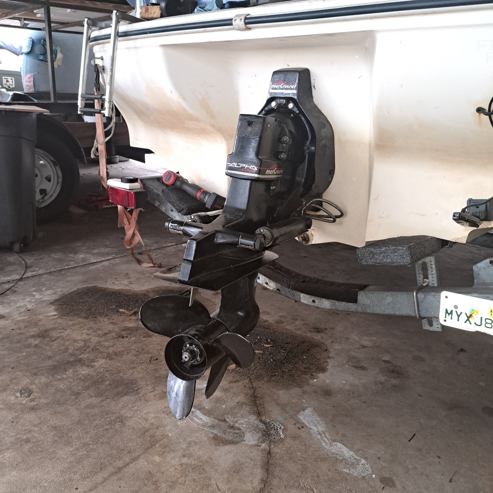
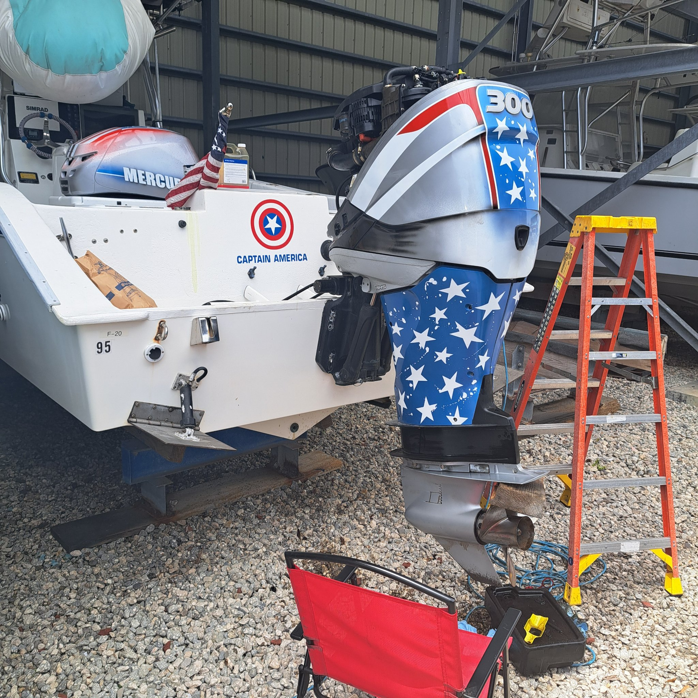

Sterndrive & inboard repair
MerCruiser, Volvo Penta & PCM — serviced at your dock in Lake County & Central Florida.

MerCruiser
Alpha & Bravo drives.
MerCruiser sterndrive service and repair: bellows replacement, gimbal bearings, drive alignment, gearcase service, manifolds and risers, winterization, and full engine service. Done at your dock or lift — no haul-out needed for most jobs.
Volvo Penta
The drive most shops skip.
Volvo Penta sterndrive service — and yes, we actually work on them. Plenty of shops in Central Florida turn Volvo Penta owners away; we diagnose and repair them properly, from drive service to engine work.
PCM inboards
Ski & wake boats.
PCM inboard maintenance and repair for ski and wake boats: routine service, cooling systems, fuel delivery, and drivetrain work at your dock or storage location.
Common sterndrive work
What we fix most.
- Bellows & gimbal bearing replacement
- Drive service & gearcase reseals
- Manifolds, risers & exhaust
- Shift & throttle cable issues
- Overheating & cooling problems
- 100-hr maintenance & winterization


$150 an hour, parts at cost. $199 flat covers the trip and a full diagnosis within 30 miles.